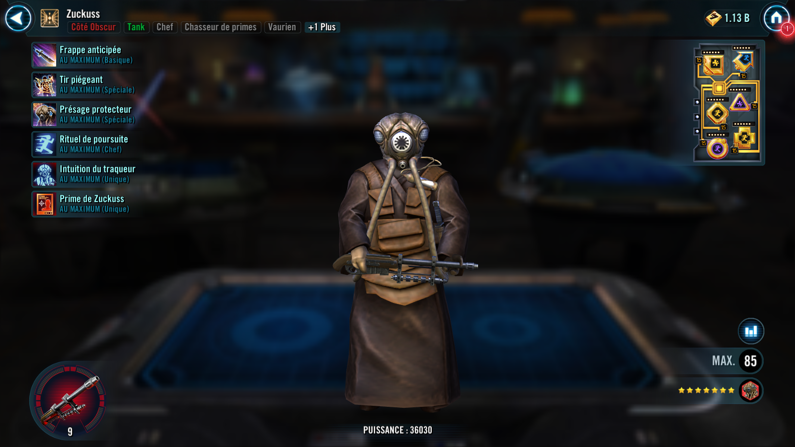
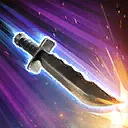

Zuckuss
A mystic Gand findsman and relentless Bounty Hunter who ensures no target slips through his grasp
A mystic Gand findsman and relentless Bounty Hunter who ensures no target slips through his grasp


Deal Physical damage to target enemy. Recover 10% Protection.
If Zuckuss had Foresight, attack again.
Deal Physical damage to the target enemy, then Stun them and inflict Accuracy Down on them for 2 turns which can't be evaded.
If target enemy was already Stunned, Zuckuss gains Protection Up (40%) for 2 turns and target enemy loses 15% Turn Meter.
Zuckuss dispels all debuffs on himself and Taunts for 2 turns. Bounty Hunter allies gain Foresight for 2 turns. Zuckuss gains 2 stacks of Force Connection for 3 turns, which can't be copied, dispelled, or prevented.
Zuckuss recovers 30% Protection.

Bounty Hunter allies have +80% Max Protection.
Whenever a debuffed enemy ends their turn, Bounty Hunter allies recover 10% Protection, doubled for Zuckuss. Whenever an enemy with Foresight evades, Zuckuss gains 10% Turn Meter and other Bounty Hunter allies gain 5% Turn Meter.
While Zuckuss is the only Tank ally, whenever a Dark Side Bounty Hunter ally with Foresight uses a Special ability, all other Dark Side Bounty Hunter allies with Foresight assist.
When Zuckuss is in the Leader slot, and not the ally slot, the following Contract is active:
Contract: While buffed with Foresight, deal damage with an attack to enemies 20 times. (Only Bounty Hunter allies can contribute to the Contract.)
Reward: All Bounty Hunter allies have their payouts activated. All Bounty Hunter allies gain 25 Speed, 30% Offense, and non-Tank Bounty Hunter allies Stealth for 3 turns.
If all allies were Bounty Hunters at the start of battle: At the start of each encounter Taunt for 2 turns.
Zuckuss has +50% Defense. Whenever a Bounty Hunter ally with Foresight evades, Zuckuss gains 10% Turn Meter and 2 stacks of Force Connection (stacking), which can't be copied, dispelled, or prevented for 3 turns.
While Zuckuss has Force Connection, he has +50% Defense and recovers 15% Protection at the start of his turn.
At start of the battle, if 4-LOM is an ally, Zuckuss gains 30% Potency and Tenacity.
Omicron Boost : While in Territory Wars: Zuckuss gains 100% Max Protection until the first time he is defeated and Bounty Hunter's Resolve.
If all allies were non-Galactic Legend Bounty Hunters at the start of battle: Whenever Taunt is dispelled, Zuckuss Taunts for 1 turn.
Whenever Bounty Hunter allies are Dazed, they dispel it and gain Speed Up for 2 turns.

Whenever Zuckuss receives Rewards from a Contract, he also gains the following Payout. (Contracts are granted by certain Bounty Hunter Leader abilities.)
Payout: Taunt for 2 turns which can't be dispelled and all Bounty Hunter allies gain Foresight for 2 turns and 15% Turn Meter. Zuckuss gains 200% Critical Avoidance until the end of battle.